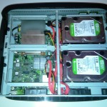
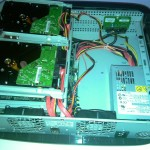

Der Ursprung aller Gedanken
Natürlich mit der Front zur Wand aufgestellt, weil sich sonst die Drehzahl der Lüfter durch schlechte Luftströmung signifikant erhöht und dadurch das System lauter bis viel lauter wird. Daher auch leider weniger Wohnzimmer geeignet, es sei denn man hat eine freie Stellfläche zur Verfügung mit ausreichend Platz nach hinten.

Erweitert um:
- 2 GB DDR2 PC2-6400 ECC 800MHz Intel RAM
- 2x WD 1,5TB SATA 7200 32MB Greenpower 24h-Festplatten
Die rechte und linke Festplattenhalterung lässt sich jeweils um knapp 180° umklappen; ideal um Hardware auszutauschen bzw. zu erweitern.